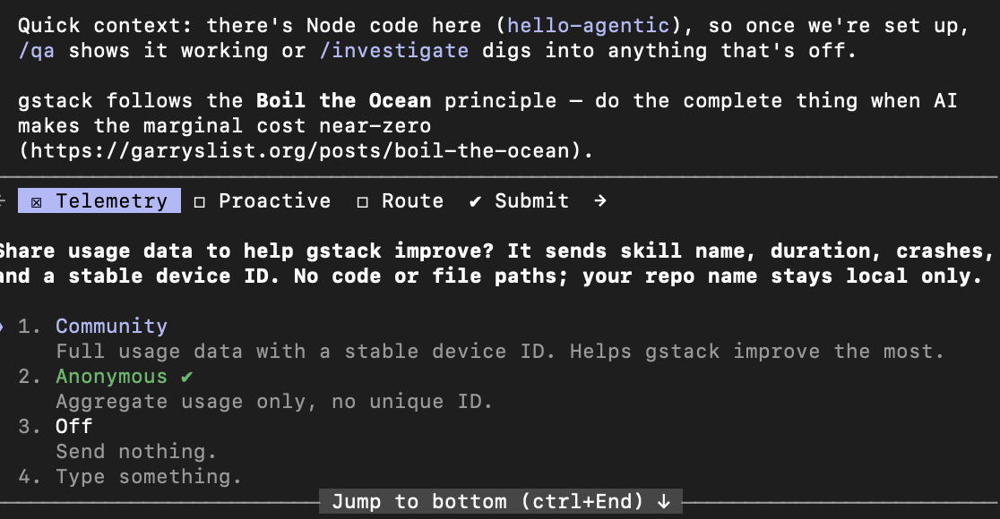

Agentic engineering
Stop chatting with the AI. Start sending it to work.
The first four labs of DS 6042 taught you how attackers break systems. The next four teach you to build them well. The jump in capability that makes the latter realistic — for a graduate student, on a laptop, in a semester — is the agentic-engineering toolchain that landed in 2024–2025. Lab 09 is where you pick it up.
For most of computing history, "use an AI to write code" meant pasting a function into a chatbot and copying the result back. That model is over. A modern agent reads your codebase, plans changes, edits files, runs tests, watches them fail, fixes them, opens a pull request, and writes the release notes — all without a human typing each step. The piece that makes this disciplined rather than chaotic is a thin layer of skills on top of Claude Code: gstack, a bundle of 23 sprint-shaped prompts that Garry Tan released under MIT in 2025. By the end of this lab you'll have used it to ship a small security tool.
This lab introduces a lot of new vocabulary — agent, skill, tool call, ReAct, MCP, context window, retrospective. Every term underlined like this is hoverable: an explainer opens directly below the line you're reading, pushing the rest of the page down — nothing gets covered.
Both sides are simulated — no real LLM calls. The point is the shape: a one-shot LLM has to guess; an agent can look things up.
Where to find it
- Claude Code — Anthropic's agentic CLI. Docs: docs.claude.com/en/docs/claude-code.
- gstack — Garry Tan's open-source skill bundle. Repo: github.com/garrytan/gstack. MIT licensed.
- Claude for Education — Anthropic's free-access program for students at partner institutions. claude.com/contact-sales/education-plan.
- Model Context Protocol (MCP) — the open standard that lets agents talk to external tools. Spec + servers: modelcontextprotocol.io.
- Building skills — Anthropic's Complete Guide to Building Skills for Claude (PDF) and the official skills repo github.com/anthropics/skills, which also ships a
skill-creatorskill that drafts and reviews new skills for you.
1 · What is an agent?
An agent is an LLM running inside a loop with three additional capabilities: a set of tool calls it can invoke, a persistent memory of what it has seen so far, and the autonomy to decide on its own what to do next. The loop is the whole game. Without it you have a chatbot — a function that takes a prompt and emits a single completion. With it, you have something that can pursue a goal.
We covered these ideas in Lab 04 (microagent): you took a 90-line ReAct agent apart line by line — one tool, one loop, one Python file — and hand-traced a complete Think → Act → Observe → Reflect cycle, then walked the production-shape agent you went on to attack in Lab 05. This section is a quick refresher before we scale that same loop up to a full agentic-engineering workflow; if the mechanics below feel familiar, that's why.
The canonical pattern was named by Yao et al. in 2022 and is called ReAct — short for reason + act. On each turn the agent:
- Thinks — writes out (to itself, in natural language) what it's trying to figure out and what it might try next.
- Acts — emits a structured tool call:
read_file("README.md"),run_bash("nmap -sV target"),web_search("CVE-2024-3094"). - Observes — receives the tool's output and incorporates it into its working context.
- Reflects — decides whether the goal is met. If yes, stop. If no, think again.
The shape of the loop is identical whether the agent is summarizing a PDF or shipping a microservice. What changes is the tool set and the patience of the loop.
Every loop has a budget — the context window. The agent's entire memory is the running transcript of its own thoughts, tool calls, and tool results. When the transcript gets too long, the framework either summarizes the older turns or drops them. Designing for finite context — keeping the loop tight, calling tools that return small useful chunks — is half of agentic engineering.
Because every action is an explicit, recorded tool call, the loop leaves behind a complete, replayable account of what the agent did and why: each Think (its reasoning), each Act (the exact command and arguments), and each Observe (what came back). That record is your audit trail. When an agent does something wrong — edits the wrong file, wanders off task, or follows a malicious instruction it read in a file (the prompt-injection attacks from Lab 07) — you don't guess. You open the transcript and find the exact turn it diverged.
This is both an engineering property (you can debug a 50-turn run) and a security one: an autonomous process that can run shell commands must be accountable for what it ran. Auditing agents is the same discipline as auditing a human operator — keep the log, and actually read it. It's why the rule "read every diff" exists, and why /gstack retro ends a sprint by reading the whole transcript back to you. The agent is auditable by construction; the trail only protects you if someone reviews it.
2 · What is a skill?
A skill is a focused, reusable instruction set the agent invokes when a particular kind of work shows up. Think of it the way you'd think of a function library: a one-shot LLM is general-purpose; a skill is a curated specialty. In Claude Code, a skill is a single markdown file in ~/.claude/skills/<name>/SKILL.md, and the user triggers it with a slash command like /review. (Skills that ship as a bundle — like gstack — are namespaced under the bundle: you load the bundle once with /gstack, then invoke its skills as /gstack <skill>, as you'll see in Setup.)
- Think · 2 minA skill is "a single markdown file" the agent loads on a slash command — no code. On your own, predict the fields that file must carry. What metadata does Claude Code need to register
/review, decide it's the right skill, and bound what it's allowed to touch? List every field you'd put above the instructions.
I've done the Think step — reveal Pair & Share
- Pair · 4 minCompare field lists. Did one of you include a tool allow-list and the other forget it? Argue out why a code-review skill would ever need to restrict its own tools rather than leave them open.
- Share · 2 minAs a table, write the YAML header you'd ship for a
/reviewskill, then check it against the real SKILL.md anatomy below. Which of your fields exists, and which one did the real file add that you missed?
SKILL.md, trimmed for clarity. Hover any tagged line to see what the field does and why it matters.--- name: review description: Senior-engineer code review of pending changes. Auto-fix safe issues, flag risky ones. allowed-tools: - Read - Bash(git status:*, git diff:*, git log:*) - Edit --- You are a senior engineer doing code review. Run `git diff` to see pending changes. For each file, check: 1. Race conditions on shared state 2. Missing error handling at network/IO boundaries 3. Test coverage of the changed code paths 4. Public API breakage Auto-fix only safe issues (typos, dead imports, formatting). For anything riskier, flag it and stop for human approval.
That's the entire abstraction. A skill is a YAML header (name, description, tool allow-list) plus a body of instructions in English. No code. The whole thing is version-controlled, sharable, MIT-licensable. gstack ships 23 such files; you'll write your own before this lab is over.
The same LLM that could do code review off a blank prompt does it much better when invoked through a skill. The reason isn't model quality — it's that the skill narrows the search space. By the time the agent reads "you are a senior engineer doing code review," it has implicitly ruled out a thousand alternative framings (summarize the code, refactor it, explain it to a beginner). The skill is a contract between you and the model about what kind of work this turn is.
2.1 · write a microskill, load it, call it ~5 min
Don't take my word for how small a skill is — write one. Just as Lab 04 built the smallest possible agent, here's a small but real skill: failed-logins, which tallies failed SSH logins per source IP in an auth.log — a one-skill warm-up for the sshbursts sprint below. Unlike a pure-logic skill, this one has to act on a file, so it carries an allowed-tools: list — and that list is the whole point: it's the hard-edged guardrail that says this skill may grep a log, and nothing else. The full anatomy from the widget above, in a file you can type in under a minute.
auth.log is the Linux authentication log — every login attempt, success or failure, lands there. A flood of Failed password lines from one source IP in a short window is the fingerprint of a brute-force attack: an attacker pointing an automated tool at your SSH port and trying thousands of passwords until one works (or replaying leaked username/password pairs, a variant called credential stuffing). It's one of the most common attacks on any internet-facing host — within minutes of going online, a fresh server starts seeing them.
The detection signal is simply volume per source: a real attacker fires hundreds of attempts in seconds (the 203.0.113.42 burst with 137 failures in the demo at the top of this lab), while a legitimate user who fat-fingers a password produces a handful spread over time (the 198.51.100.7 case, 4 failures). failed-logins surfaces the attacker by counting failures per IP — the simplest possible detector, and exactly the signal the sshbursts sprint hardens into a real burst detector.
Step 1 — write the file. Claude Code discovers personal skills in ~/.claude/skills/<name>/SKILL.md. Create that folder and file:
$ mkdir -p ~/.claude/skills/failed-logins $ nano ~/.claude/skills/failed-logins/SKILL.md
---
name: failed-logins
description: Tally failed SSH logins per source IP in an auth.log file.
Use when someone points at an auth.log (or similar) and wants the
top offending IPs.
allowed-tools:
- Read
- Bash(grep:*, awk:*, sort:*, uniq:*)
---
You count failed SSH logins per source IP in the file the user names.
Steps:
1. Run: grep "Failed password"
2. Pull the source IP from each line (the token after "from").
3. Tally per IP and sort by count, descending.
Output one line per IP, most failures first: ` `.
Nothing else — no preamble, no explanation. That's the entire skill. Read the three fields against the guardrail logic from best practice #3: the description tells the model when to reach for it (someone hands it an auth.log); the body pins exactly what it emits; and allowed-tools: bounds what it may touch — Read plus four read-only shell verbs. It cannot write a file, hit the network, or run rm, because those tools were never granted. Restricting tools is the cheapest, hardest-edge safety you have.
From Anthropic's skill-building guide, the most common reasons a freshly-written skill just doesn't show up:
- The file must be named exactly
SKILL.md(case-sensitive) —skill.mdorSKILL.MDare ignored. - The folder is kebab-case — no spaces, capitals, or underscores (
failed-logins✓,Failed_Logins✗) — and thename:in the frontmatter should match it. - No
README.mdinside the skill folder, no< >angle brackets in the frontmatter, and no "claude"/"anthropic" in the name — those last two are reserved/blocked because the frontmatter is injected straight into Claude's system prompt (a prompt-injection surface).
A skill only helps if Claude loads it at the right moment — and that decision is made entirely from the description, before the body is ever read. The Anthropic guide's formula is [what it does] + [when to use it] + [trigger phrases].
Should trigger: "find brute-force IPs in this auth.log" "who's hammering SSH on this box?" Should NOT trigger: "what's the weather?" "write me a poem"
Under-triggering (never loads when it should)? Add detail and keywords to the description. Over-triggering (loads for unrelated prompts)? Add a negative trigger (Do NOT use for …) and be more specific. Debug trick from the guide: ask Claude "when would you use the failed-logins skill?" — it quotes the description back, and you'll see exactly what's missing.
Step 2 — get a log to test against. You need an auth.log to point the skill at — and you probably don't have a useful one locally. macOS has no /var/log/auth.log at all (it uses the unified logging system), and on WSL the file exists but is usually empty. So grab the lab's synthetic log, which contains the exact attack from the demo:
Step 3 — load and call it. Skills are scanned at startup, so start a fresh session in the directory where you saved sample-auth.log, then invoke the skill with a path:
$ claude [claude code · skills loaded from ~/.claude/skills/] › /failed-logins sample-auth.log [failed-logins] running: grep "Failed password" sample-auth.log 137 203.0.113.42 4 198.51.100.7
Those are the same two IPs from the demo at the top of the lab: the attacker's brute-force burst (137 failures) and a real user's typos (4). On a real Linux server you'd point the skill at /var/log/auth.log instead — same skill, same output shape. One file, three fields, one job — loaded into the agent's context, granted exactly the tools it needs, and invoked by name. Every gstack skill is this, scaled up. When you hit a workflow you've typed twice, this is the move: write the microskill, scope its tools, drop it in ~/.claude/skills/, call it.
For more worked examples, Anthropic's official skills repo (github.com/anthropics/skills, "for demonstration and educational purposes") ships a template/ getting-started skill plus small categorized examples — the same minimal SKILL.md shape you just wrote. Clone it and read a handful before you write your own for the assignment.
2.2 · when a skill grows: progressive disclosure
The microskill was a single file, but a skill is really a folder, and bigger skills bundle more than instructions. The trick that keeps a large library of skills cheap is how Claude loads them — a three-level scheme Anthropic calls progressive disclosure, and it maps directly onto the context-window budget from Section 1.
failed-logins/
├── SKILL.md # required — instructions + YAML frontmatter
├── scripts/ # optional — executable code (Python, Bash) the skill runs
├── references/ # optional — extra docs, loaded ONLY when needed
└── assets/ # optional — templates, fonts, files used in output| Level | What | Loaded when | Cost |
|---|---|---|---|
| 1 | Frontmatter — name + description | Always — sits in the system prompt | A few dozen tokens per skill |
| 2 | SKILL.md body — the full instructions | When Claude decides the skill is relevant | Only when it fires |
| 3 | references/ · scripts/ · assets/ | Only if the body points Claude to them | Pay-as-you-go |
This is why the description matters so much (Level 1 is the only thing always in context) and why Anthropic suggests keeping SKILL.md focused — under ~5,000 words — and pushing long reference material into references/ that the body links to on demand. Same lesson as designing the agent loop for finite context, now applied to the skill itself.
Notice that failed-logins shells out to grep rather than asking the model to "read the log and count." That's the guide's advanced technique: for anything that must be exact — a tally, a validation, a compliance check — bundle a script in scripts/ and have the skill run it. Code is deterministic; language interpretation isn't. The model decides when and orchestrates; the script does the counting. (You'll feel this directly in the sprint below, where the design doc catches a parsing bug precisely because the logic lives in testable code, not in a prompt.)
3 · What is agentic engineering?
Agentic engineering is the practice of building software by orchestrating agents and skills into a disciplined process, rather than firing one-shot prompts at an LLM. The agent is the worker; the skill is the procedure; the engineer is the orchestrator. The output is shipped software — not chat transcripts, not snippets, real code in a real repo with a real pull request (PR).
The piece most people miss is the process. Without one, agentic engineering decays into "vibe-coding": the agent generates ten thousand lines, half of which work, none of which were planned, and the human can't audit any of it. gstack imposes a seven-phase sprint that mirrors what disciplined human teams already do:
- Think · 3 mingstack imposes a seven-phase sprint so agentic engineering doesn't "decay into vibe-coding." On your own, write down the phases you'd put between "I have an idea" and "the PR is open" — in order — and name the single artifact each phase hands to the next. Where would you put the gate that catches a bad bug before any code is written?
I've done the Think step — reveal Pair & Share
- Pair · 4 minCompare phase lists. Did one of you skip a planning or review step the other kept? For each phase one of you dropped, decide together: was it genuinely redundant, or did dropping it just defer the work to QA or production?
- Share · 2 minAs a table, commit to one ordered seven-phase pipeline with its artifacts, then walk it against the gstack sprint diagram below. Which phase did your group miss — and which artifact made the next phase possible?
The phases compound. /gstack office-hours interrogates the framing; /gstack plan-eng-review reads that interrogation and produces a design doc; the auto-implementation reads the design doc and writes code; /gstack review reads the code and the design doc and audits the delta; /gstack qa reads the code and runs it in a real browser. By the time you reach /gstack ship, every prior step has been written down, so the PR description writes itself.
4 · Setup ~25 min
Full install — open by default; collapse if you already have Claude Code running.
4.1 Install Claude Code
Claude Code is a native CLI for macOS, Linux, and Windows (WSL). Install with one command:
curl -fsSL https://claude.ai/install.sh | bash
# then restart your shell so `claude` is on $PATHVerify:
$ claude --version claude-code 2.x.x
4.2 Get a Claude plan
Claude Code requires a Claude subscription, not a raw API key (the API meter can run away from you in a single bad afternoon — a subscription has a predictable monthly ceiling).
- Claude for Education — Anthropic's free-access program for students at partner institutions. Program page.
- Claude Pro — $20/month, fine for one lab and the assignment. Upgrade page.
- Claude Max — $100–$200/month tiers, more headroom. Only pay for this if you'll keep using it after the course.
Sign in with your plan from inside Claude Code:
claude login4.3 Install gstack
Prerequisite — install bun first. gstack's ./setup compiles a few small helper programs with bun. Bun is a fast, all-in-one JavaScript runtime and toolkit — roughly a quicker alternative to Node.js that also bundles a package manager and a compiler in one binary. (A "runtime" is just the program that executes JavaScript outside a browser, the way python executes .py files.) gstack uses bun's compiler to turn its TypeScript helpers into runnable binaries during setup, so bun has to be on your $PATH before you clone, or ./setup fails immediately:
$ curl -fsSL https://bun.sh/install | bash $ exec $SHELL # reload so `bun` is on $PATH $ bun --version 1.x.x
Now clone gstack and run its setup. This installs all 23 skills into your ~/.claude/ directory and sets up the per-project memory file:
$ git clone --single-branch --depth 1 https://github.com/garrytan/gstack.git ~/.claude/skills/gstack \ && cd ~/.claude/skills/gstack \ && ./setup Cloning into '/Users/you/.claude/skills/gstack'... Receiving objects: 100% (842/842), 1.2 MiB | 4.0 MiB/s, done. ✓ installed 23 skills into ~/.claude/skills/gstack/ ✓ registered the /gstack bundle ⚠ build failed for the `browse` binary — core skills installed fine ✓ next: cd into a project and run `claude` to try them
browse binary
On most setups ./setup ends with a build error for gstack's optional browse helper (a headless-browser binary a couple of QA skills use for live browser testing). This is non-fatal. The 23 core skills install correctly and everything in this lab works without it — the /gstack qa walkthrough below verifies against generated fixtures, not a browser. If you later want the browser-QA skills, fix the browse build separately; you don't need it today.
One interactive prompt during setup. Partway through, ./setup pauses to ask whether you'll share anonymous usage telemetry. It sends only the skill name, duration, crashes, and a stable device ID — never your code, file paths, or repo name. Pick whichever you're comfortable with: Community (full usage + stable ID), Anonymous (aggregate only, no unique ID — the default), or Off (send nothing). Any choice works for this lab, and you can change it later.

./setup telemetry prompt. The note above it also states gstack's "Boil the Ocean" design principle — do the complete thing when AI drives the marginal cost near-zero. Choosing Anonymous or Off is fine.4.4 Validate
gstack is a bundle, so its skills are namespaced under it: you load the bundle once with /gstack, then invoke each skill as /gstack <skill> (not /<skill>). Make a fresh empty directory, start Claude Code, load the bundle, and call one skill:
$ mkdir hello-agentic && cd hello-agentic && claude [claude code · started] › /gstack [gstack: bundle loaded · 23 skills available · invoke as /gstack <skill>] › /gstack office-hours [office-hours: I'm going to interrogate your idea. What problem are you actually solving?] › A tool that flags suspicious failed SSH logins from auth.log. [office-hours: who reads the output? a human? another system? what's the action they take when an alert fires?]
If /gstack loads the bundle and /gstack office-hours responds the way it did above, the rest will work. If /gstack isn't found, re-run ./setup from inside ~/.claude/skills/gstack/ (after confirming bun --version works).
5 · Your first sprint — an SSH burst detector ~60 min
We'll build a small Python CLI called sshbursts. It does four things: read an auth.log file, pick out the failed SSH logins, group them by source IP, and flag any IP that shows a burst of activity — for example, five failures from one IP within a 30-second window.
The point of the exercise is how we build it. We'll drive the whole thing with seven gstack slash commands and write fewer than ten lines of code ourselves.
This sprint lives in version control from the start: /gstack review reads git diff to audit the agent's changes, and /gstack ship (5.6) pushes a branch and opens a pull request — both need a repo, and the PR needs a GitHub remote. So before you start, create the project as a git repo and a GitHub repo.
Install the GitHub CLI first. The gh command line tool is what lets the agent create the repo and open the PR on your behalf. Download and install it for your platform from cli.github.com (macOS: brew install gh; Windows: winget install GitHub.cli; Linux: see the site). Then run the one-time setup below — gh auth login signs you in once:
$ gh --version # confirm the GitHub CLI is installed $ gh auth login # one-time GitHub sign-in for the gh CLI $ mkdir sshbursts && cd sshbursts && git init $ gh repo create sshbursts --private --source=. --remote=origin ✓ created repository you/sshbursts on GitHub · remote 'origin' added $ git commit --allow-empty -m "chore: init" && git push -u origin main ✓ pushed main to origin · this is the base branch your PRs target $ claude # now run the sprint below from inside this repo
Now the PR in 5.6 has a clear destination: your own you/sshbursts repo on GitHub. (No GitHub account? You can still do every step except /gstack ship — commit locally instead, with git add -A && git commit.)
5.1 /gstack office-hours · challenge the framing
Before you let an agent write a single line, force yourself (and it) to pin down the problem. /gstack office-hours is gstack's product-manager skill — it interrogates your idea until the framing survives contact with reality.
› /gstack office-hours [office-hours] What are you trying to build? › A CLI that flags suspicious failed SSH logins. [office-hours] Three questions before we go further: 1. Who is the user? A sysadmin tailing the log? A SIEM that ingests JSON? (A SIEM is a Security Information and Event Management platform: the central system that aggregates logs and alerts from across an org and correlates them. It wants structured machine-readable events, not prose.) The output format and the alert noise floor are completely different for each. 2. What action does the alert trigger? Block the IP? Page an oncall? Write to a ticket queue? Each implies a different latency budget. 3. What's "suspicious"? 5 failures in 30s is one definition. Many failures from a known-bad ASN is another. Pick one and write it down — you'll be tempted to invent a third halfway through implementation. › Sysadmin tailing the log. Alert is just stdout (no integration). Suspicious is ≥5 failures from one IP within any 30-second window. [office-hours] Good — that's a one-paragraph spec. I've written it to SPEC.md. Now run /gstack plan-eng-review to produce a design doc the engineering skill will read.
This is the most-skipped phase in agentic engineering and the most expensive to skip. The two minutes you spend here save thirty minutes downstream.
5.2 /gstack plan-eng-review · the design doc
Now you ask for an engineering plan that's specific enough to implement against. The skill reads SPEC.md and produces a design doc with module boundaries, test cases, and risks.
› /gstack plan-eng-review [plan-eng-review] Reading SPEC.md... ok. Drafting PLAN.md. # sshbursts — design doc ## Modules parser.py parse auth.log lines into (timestamp, ip, outcome) tuples detector.py sliding-window burst detection cli.py argparse + JSON output to stdout ## Test matrix parse a real auth.log line → exact tuple match parse a malformed line → graceful skip detect 5 failures in 25s from same IP → flagged detect 4 failures in 25s from same IP → NOT flagged detect 5 failures across two IPs → neither flagged detect 5 failures spanning 31s window → NOT flagged ## Risks - timestamp parsing: auth.log timestamps are LOCAL TIME, no year. Year inference matters at the year boundary. Mitigation: pass --year flag. - syslog can rotate mid-window. We ignore this for v0. Approve to implement, or push back?
The design doc has caught a real bug at design time: auth.log timestamps don't include a year, and naive parsing breaks at year boundaries. A human would either notice this in code review or — much worse — in production. The agent surfaced it before a single line was written.
5.3 Auto-implement · approve
Type approve (or press enter to accept) and the agent writes every file in the design doc. Roughly 180 lines of Python across three modules, plus a test file, plus a README.md. Total elapsed time on a modern machine: ~45 seconds. Watch the diff scroll past — your job is not to write the code; your job is to review every change.
› approve [implement] Writing parser.py (44 lines)... ✓ [implement] Writing detector.py (61 lines)... ✓ [implement] Writing cli.py (37 lines)... ✓ [implement] Writing tests/test_parser.py (28 lines)... ✓ [implement] Writing tests/test_detector.py (39 lines)... ✓ [implement] Writing README.md (52 lines)... ✓ [implement] 6 files written, 261 lines total. Tests next.
5.4 /gstack review · code audit
Same rubric a senior engineer would walk through. The agent reads git diff, applies the rules in its own skill file, auto-fixes the safe things, and flags the rest.
› /gstack review [review] Reading git diff... 6 files, +261 / -0. [review] Running rubric... ✓ Race conditions on shared state — none found ⚠ Missing error handling — detector.py:23 assumes timestamps monotonically increase. Auto-fix: skip non-monotonic entries with a warning. (applied) ✓ Test coverage — every module has at least one test ⚠ Public API breakage — n/a (new project) ⚠ parser.py:31 uses datetime.strptime without timezone — works in UTC, breaks elsewhere. Suggest: log a warning if $TZ != UTC. Awaiting your decision. [review] 1 auto-fix applied. 1 issue flagged for you.
5.5 /gstack qa · end-to-end test
The agent generates a synthetic auth.log, runs sshbursts against it, verifies the output, and writes a regression test.
› /gstack qa [qa] Generating fixtures/sample-auth.log (200 lines, 4 IPs, one burst pattern)... ✓ [qa] Running: python -m sshbursts fixtures/sample-auth.log [qa] Output: {"suspicious": [{"ip": "203.0.113.42", "failures": 7, "window_s": 18}]} [qa] Expected: 1 alert for 203.0.113.42. Match. [qa] Wrote tests/test_e2e.py — replays this scenario on every CI run.
5.6 /gstack ship · commit + PR
Final phase. The agent stages every file, writes a commit message that summarizes the design doc's intent, and opens a pull request — targeting the origin remote you created at the start of this sprint (you/sshbursts on GitHub). The PR's base branch is main; the agent pushes its work to a feature branch and opens the PR from that branch into main, writing the description itself (linking back to SPEC.md and PLAN.md for reviewer context).
› /gstack ship [ship] git status: 8 new files. Running tests one more time... [ship] All tests pass (12/12). Committing. [ship] Pushing branch agent/sshbursts-v0 to origin (you/sshbursts)... [ship] Opening PR against you/sshbursts (base: main): PR #1: feat: sshbursts — flag failed-SSH bursts from auth.log Body: 14 lines summarizing SPEC.md, PLAN.md, and the review checklist. https://github.com/you/sshbursts/pull/1 Reviewers: you.
Since it's your repo, you're the reviewer on your own PR — which is exactly the point: the PR is the audit surface where you read every change before it merges. Solo, you self-review and merge; on the team assignment, a teammate reviews it.
You wrote less than ten lines of code. You wrote (and approved) one paragraph of spec, one design doc, and one PR description. The agent wrote ~260 lines of Python, ~67 lines of tests, ~52 lines of README, and ~14 lines of PR body. Every decision is documented; every change is reviewable; every test runs in CI. That is the productivity claim of agentic engineering, and it's real — but only because the process forced you to plan, review, and test at every gate.
5.7 /gstack retro · the retrospective
One more skill before you ship for real. /gstack retro reads the entire session transcript and asks you what to keep and what to change next time. The answers feed a project-local LEARNINGS.md that future skills read on startup, so the team gets smarter sprint over sprint.
6 · Orchestration — one engineer, many agents
So far you've run one agent through one sprint. Orchestration is the next scale up: coordinating several agents, skills, and sub-tasks toward a single goal. The agent is the worker and the skill is the procedure — and you are the conductor. You stop doing the work and start deciding what work happens, in what order, by whom, and where the hand-offs are. The gstack sprint you just walked is already orchestration in miniature; the team assignment is orchestration at full size.
- Think · 3 minYou've shipped one tool with one agent. Now imagine the job is 5× bigger — too big to hold in one loop's context window. On your own, list the ways you could split it across multiple agents so they don't trip over each other, and for each, name the one thing those agents must agree on for their outputs to combine.
I've done the Think step — reveal Pair & Share
- Pair · 4 minCompare splits. Did one of you split by step (a pipeline) and the other by independent piece (parallel)? Which split needs a shared contract, and which needs strict ordering?
- Share · 2 minCommit to one split for an
auth.logtriage tool, then check it against the four patterns below. Which did your group reinvent?
Why orchestrate at all? Because a single agent in a single loop has hard limits: its context window fills, the task is too large to hold at once, or the sub-tasks are independent and would finish faster in parallel. More than anything, orchestration is context management — give each agent a tight scope so its loop stays inside the window, then combine the results. Four patterns cover almost everything you'll do:
| # | Pattern | Shape | Use when | Example in this lab |
|---|---|---|---|---|
| 1 | Sequential (pipeline) | each step's output is the next step's input | steps have a fixed order and dependencies | the gstack sprint: office-hours → plan → implement → review → qa → ship |
| 2 | Fan-out (parallel) | independent units run at once, then merge | sub-tasks don't depend on each other | the team building 2–5 pieces against one contract |
| 3 | Delegation (sub-agents) | a coordinator spawns scoped sub-agents, each with fresh context, returning just a result | one big task would blow the main context window | a review agent spawning one sub-agent per changed file |
| 4 | Loop-until-done (iterative) | repeat a step until a quality bar is met | output keeps improving with iteration | re-run /gstack review + fix until the rubric is clean |
Two of these you've already met. The sprint is sequential orchestration across phases — each phase hands a written artifact to the next. The team assignment is parallel orchestration across people — each teammate's agent builds one piece. Same idea, two axes.
Sequential orchestration is easy to reason about: one thing finishes, the next begins. Parallel orchestration is where teams break, because the units run blind to each other. The fix is the one from the assignment: agree the contract — the exact shape of the data crossing each seam — before anyone starts. With the contract pinned, N agents (or N people) work at once against a known target, and the integration test just feeds a shared fixture through all of them. Everyone plays from the same score.
Every agent you add is another context window to keep small and another transcript to audit. Delegation (sub-agents) exists precisely to protect context: the coordinator stays lean by handing a scoped job to a sub-agent that does the heavy reading in its own window and returns only the answer. More agents means more leverage and more surface to review — so the audit-trail discipline from Section 1 matters more as you scale, not less.
6.1 · write a micro-orchestrator ~5 min
The diagram makes orchestration look like a lot of moving parts, but the orchestrator itself is tiny — it's just the bit of control flow that decides what runs and in what order. The clearest way to feel that is to write the smallest one that still works. Just as Lab 04 built the smallest agent and §2.1 the smallest skill, here's the smallest orchestrator: six lines that run the sshbursts pipeline as three pluggable workers.
The key move is the separation: the orchestrate function owns the control flow and nothing else; the workers (parse, detect, report) do the actual work and know nothing about each other. They communicate only through the contract — each worker's return value is the next one's argument, which is the "out → in" edge from the diagram made literal.
# THE ORCHESTRATOR — owns control flow (the order), not the work.
def orchestrate(stages, data):
for stage in stages:
print(f"[orchestrator] dispatch -> {stage.__name__}")
data = stage(data) # each stage's output is the next's input
return data
# THE WORKERS — each obeys one contract: take the prior output, return the next.
def parse(path): ... # auth.log path -> [ {"ip": ...}, ... ]
def detect(events): ... # events -> [ (ip, count), ... ] sorted
def report(rows): ... # rows -> prints "<count> <ip>"
# YOU, THE CONDUCTOR — define the pipeline and press go.
orchestrate([parse, detect, report], "sample-auth.log")Run it against the same log from §2.1 and the orchestrator narrates each hand-off, so you can see the control flow it owns:
$ python3 micro_orchestrator.py sample-auth.log [orchestrator] dispatch -> parse [orchestrator] dispatch -> detect [orchestrator] dispatch -> report 137 203.0.113.42 4 198.51.100.7
Now the four patterns are just edits to that one for loop, with the workers untouched:
- Sequential — the loop as written.
- Fan-out — run the pipeline over many files at once:
results = list(ThreadPoolExecutor().map(run_pipeline, files)), then merge. - Loop-until-done — wrap a stage in
while not good_enough(data): data = stage(data)with a stop condition. - Delegation — swap a worker for a call that spawns a sub-agent and returns only its result.
In a real agentic orchestrator each stage isn't a Python function — it's a Claude Code skill or a sub-agent (in the sprint, parse/detect/report become /gstack plan-eng-review, implement, /gstack review). The control structure is identical: a thin layer that dispatches workers in an order and passes a contract between them. Once you've written these six lines, you understand the gstack sprint, the team assignment, and every box in the diagram above — they are all this loop, scaled up.
7 · Best practices
Eight rules earned the hard way. Skip them at your peril.
- Think · 3 minYou've now watched an agent plan, write ~260 lines, review itself, and ship a PR. On your own, write down the three habits you'd make non-negotiable to keep that power from turning into damage — and for each, name the specific failure it prevents (a hijacked loop? an unreviewed
rm -rf? a two-hour session producing nothing?).
I've done the Think step — reveal Pair & Share
- Pair · 5 minCompare your three habits. Did one of you guard against prompt injection — the idea that anything the agent reads is part of its prompt — and the other only guard the commands it runs? Which threat does each of you under-weight?
- Share · 2 minAs a table, rank your combined habits 1–3 by how much damage they prevent, then check your top pick against the eight best practices below. Which earned-the-hard-way rule did your group not think to write down?
/gstack office-hours. This is the failure mode that destroys the most agent-built projects. Two minutes of framing saves an hour of confused implementation. If you're tempted to skip it, that's the strongest signal you shouldn't./gstack freeze before destructive commands, /gstack guard to constrain a session to a subdirectory, and skill allowed-tools: lists to whitelist only the tools each skill actually needs. The default of "agent can do anything" is wrong outside of toys.~/.claude/skills/<name>/SKILL.md and invoke it with a slash command. By week 4 you should have 5–10 of your own.dotfiles repo (or fork gstack) so they travel with you and so you can roll back a bad edit. Run ./setup --team from gstack to make a project require a specific skill version./gstack canary to set a check-in interval.8 · Anti-patterns
Agentic engineering is a tool, not a religion. There are problems it solves badly.
- One-line scripts. The
/gstack office-hoursritual is overhead. Just write it. - Trivial bug fixes where you already know what's wrong. Editing one line by hand takes ten seconds; an agent loop takes minutes.
- Pure exploratory data analysis where iteration speed dominates rigor. A Jupyter notebook with a fast feedback loop will beat a sprint structure here.
- Production deploys you don't understand. If you couldn't explain the diff to a reviewer, you can't safely ship it — gstack or no gstack.
- Anything destructive on shared infrastructure. The agent is overconfident about
DELETE,DROP, andrm -rf. So is every human who's ever broken production.
Running every gstack command on every commit is not "thorough" — it's noise. /gstack cso on a one-line README fix is theater. Pick the right skill for the change in front of you. The discipline is in choosing well, not in running everything.
Assignment · your own skill + a team security project
Two parts. Part 1 is individual: write one skill that encodes a workflow you actually repeat, and keep it in a skills repo of your own. Part 2 is the team build: ship any security tool you want, decomposed into pieces that compose. Part 1 makes the skill-authoring from §2 stick by pointing it at something you care about; Part 2 puts the full sprint and orchestration to work.
Part 1 · write a skill you'll actually use individual
Pick a repeatable process or workflow that matters to you — it does not have to be security. Your code-review checklist, your data-cleaning steps, your commit-and-PR conventions, the way you format lab write-ups, your go-to debugging routine: anything you've done by hand more than twice and wished you could hand off. Encode it as a SKILL.md using the anatomy from §2.1:
- a
descriptionthat carries real trigger phrases — then test it with the Should-trigger / Should-NOT-trigger checks from §2.1; - a body that pins the steps and the exact output format;
- an
allowed-tools:list scoped to only what the workflow needs; - if it grows, move detail into
references/per progressive disclosure.
Commit it to a separate repo of your own — a personal skills repo (e.g. <you>/claude-skills, or your dotfiles). Skills travel with you across every project, not just this lab, so they don't belong inside any one project's repo (best practice #6). Give that repo a human-readable README with install instructions and your trigger examples, the way Anthropic's skill-building guide recommends for sharing skills. It's yours to keep and grow after the course.
Part 2 · build a security tool, as a team team
Build any security tool you want — your team picks the problem. The one constraint that makes it a team project: you split the build into 2–5 independent pieces (one per teammate), and those pieces must fit together through an interface you agree on before anyone writes code. Each piece goes from /gstack office-hours to /gstack ship on its own; the whole team owns the contract between them and the integration test that proves they compose.
Step 1 · pick any project
There is no menu to choose from. Pick a security tool your team actually wants to exist — a log triager, a scanner, a small detector, a hardening auditor, a feed watcher, whatever. The only rules: it's a security tool, it ingests realistic input, and it's scoped to ship in a sprint. If you're stuck for a starting point, expand the seeds below — but the strongest projects come from a real annoyance someone on the team has hit.
Need a starting point? Expand five idea seeds (you do not have to use these).
| # | Seed | What it does | Hardest part |
|---|---|---|---|
| A | CVE Watcher | Polls the NVD feed and alerts when a CVE drops for any package in requirements.txt or package.json. | Matching versions to CVE affected-ranges (CPE strings). |
| B | Phishing URL Triage | Accepts URLs, classifies them (heuristic features + LLM judge), outputs a risk score with reasons. | A heuristic feature set so the LLM-judge isn't the whole story. |
| C | NIDS Alert Triage | Reads Snort/Suricata JSON alerts, deduplicates, prioritizes by severity, emits a daily summary. | Dedup that handles both noisy false-positives and slow-burn attacks. |
| D | Security Header Auditor | Crawls a URL, audits HTTP security headers against OWASP guidance, emits a graded report. | Which headers are required for a given site shape. |
| E | auth.log Triage | Full auth.log triage with classification (brute-force, credential-stuffing, scanner, wrong-password). | A labeled fixture set you can verify against. |
Step 2 · split it into pieces that fit together
Decompose the project into one piece per teammate. A piece is a unit one person can take through the full sprint on their own — its own modules, its own tests, its own PR. Use your team size to set the count:
| Team size | Pieces | A typical cut (rename to fit your project) |
|---|---|---|
| 2 (or solo) | 2 | core engine + interface & eval — two halves over one shared record |
| 3 | 3 | ingest/parse · core logic · output/report |
| 4 | 4 | the three above + a dedicated eval / fixture or security-hardening piece |
| 5 | 5 | the four above + an orchestration/daemon or a second data source |
Each piece is a slice of the pipeline, not a copy of it. The split should be along seams where the data changes shape — the point between "raw input" and "parsed records," or between "scored findings" and "the report a human reads." Smaller teams fold the optional pieces into a core one; bigger teams peel them out so each person owns exactly one.
The bus is the contract. Agree on its exact shape first — then each piece can be built, reviewed, and shipped by a different person (and a different agent) without anyone blocking on anyone else.
Step 3 · agree the contract before any code
The seam between two pieces is a contract: the exact shape of the data that crosses it. If the parser emits {timestamp, ip, user, outcome} and the classifier expects exactly that, the two compose. If they disagree by one field name, every piece passes its own tests and the whole thing still fails to run. So the contract is the first artifact your team produces — written down in the shared SPEC.md during a joint /gstack office-hours, before anyone splits off to implement.
This is the same move the gstack sprint makes between phases — each phase hands a written artifact to the next — applied between people. The contract is the artifact your teammate's agent reads instead of reading your code. Pin it once (a JSON record, a function signature, a CLI I/O format), put a tiny shared fixture next to it that exercises it, and now four agents can run in parallel against a fixed target. The integration test is just: feed the fixture through all the pieces end-to-end.
Step 4 · each piece runs its own sprint
Now every teammate takes their piece from /gstack office-hours through /gstack ship independently — same seven phases you just walked, scoped to one piece. Because the contract is fixed, their /gstack qa can stub the other pieces with the shared fixture. The team's final act is a joint /gstack qa + /gstack review over the integrated tool, plus one team /gstack retro feeding a shared LEARNINGS.md.
What you submit
Part 1 — individual (each teammate submits their own):
- The URL of your personal skills repo, containing the
SKILL.mdyou wrote (plus anyreferences/) and aREADMEwith install instructions and your Should-trigger / Should-NOT-trigger examples. A sentence or two on the workflow it encodes and why it's worth automating for you.
Part 2 — team (one submission per team):
- One GitHub repo URL for the whole team. Must have: a shared
SPEC.md(project + the contract), onePLAN.mdper piece (or one with a section per piece), a teamLEARNINGS.md, working CI, passing tests, and an integration test that runs the pieces end-to-end through the shared fixture. - A CONTRIBUTORS.md naming who owned which piece, plus the one-paragraph contract every piece agreed to.
- A one-page team write-up: which gstack skills you used, one place the agent surprised you (good), one place it surprised you (bad), one skill someone wrote, and one integration bug the contract caught (or one it missed).
- A short screen recording (≤4 min) demoing the integrated tool end-to-end against realistic input.
Rubric
| criterion | points |
|---|---|
Part 1 · your own skill — triggers reliably, scoped allowed-tools, README, in a separate repo | 15 |
| Part 2 · working integrated demo against realistic input | 25 |
| Part 2 · pieces compose — clean contract, real integration test | 20 |
Part 2 · code quality — what did /gstack review say? | 15 |
| Part 2 · test coverage — CI green, per-piece + end-to-end | 10 |
Part 2 · documentation — SPEC.md + contract, PLAN.md, README | 5 |
| Part 2 · reflection — the write-up; show that you read what the agent wrote | 10 |
| Total | 100 |
FAQ
Is this just vibe-coding with extra steps?
The opposite. Vibe-coding is the agent generates, you accept. Agentic engineering is the agent generates, you review, and the structure of the sprint makes review actually possible. The extra steps are the point.
What if I disagree with what the agent wants to do?
Push back. Every gstack skill ends with a checkpoint: "approve, modify, or reject?" Modify the plan. Reject and re-prompt. The skills are conversational, not authoritarian. The worst sessions are the ones where the human nods at every checkpoint.
How is this different from GitHub Copilot or Cursor's autocomplete?
Copilot completes the line you're typing. Cursor is closer — it can edit multiple files — but it's still anchored to your next keystroke. An agentic loop pursues a multi-step goal on its own, with its own working memory, calling tools you didn't tell it to call this turn. The unit of work is different.
What's MCP and do I need it?
The Model Context Protocol is Anthropic's open standard for connecting agents to external tools (databases, APIs, shells, anything). gstack uses some MCP servers under the hood. You met the protocol in Lab 06 and attacked it in Lab 07, so this lab assumes you already have the mental model.
Will this work without Claude Code?
The concepts transfer — agent loops, skills as instruction modules, sprint structure. The specifics (slash commands, the SKILL.md format, the gstack bundle) are Claude Code's. The most direct alternatives are Aider, Cline, OpenAI's Codex CLI, and Cursor's composer — each with its own skill abstraction.
My agent is doing something I didn't ask for. What do I do?
Ctrl-C. Read the transcript. Find the turn where it diverged. Either edit the skill that triggered the divergence, or add a more specific instruction to CLAUDE.md at the repo root (read on every session start). Don't just re-prompt — fix the underlying cause.